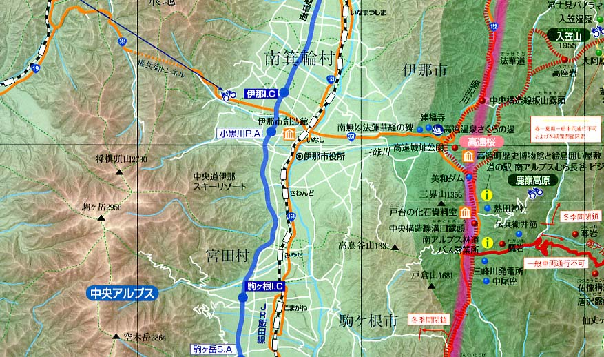

日本地図学会
Japan Cartographers Association

南アルプス（中央構造線エリア）ジオパーク
－「地図」Vol.52 No.3添付地図の一部－
この地図は、南アルプス（中央構造線エリア）ジオパーク協議会のご厚意により添付地図としたものです。
本図を許可なく複製・利用することを禁止します。
更新情報
お知らせ
第198回例会開催のお知らせ を掲載しました。（2014/10/28）
お知らせ
会員情報の確認に関するのお知らせ を掲載しました。（2014/10/28）
機関誌「地図-空間情報の科学-」
Vol.52 No.3の目次 を掲載しました。（2014/10/28）
© 2014 Japan Cartographers Association.